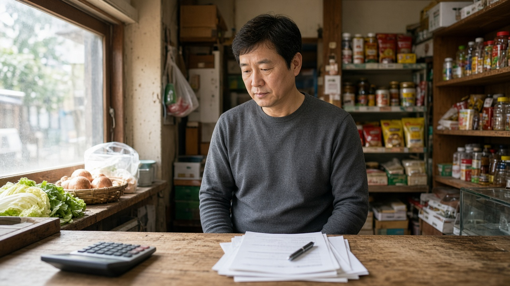

홈플러스 피해 소상공인 정책자금 금리 연 2.5% 고정, 기존 대출자도 적용되고 신청 전 확인할 점

홈플러스에 입점해 있거나 납품·협력을 해 온 사장님이라면, 이미 받아 둔 정책자금 이자가 앞으로 어떻게 되는지가 제일 궁금하실 거예요. 중소벤처기업부와 소상공인시장진흥공단은 11월 24일 변경 공고를 내고, 홈플러스 피해 소상공인 대상 일시적 경영애로자금 금리를 연 2.5% 고정으로 낮춘다고 밝혔습니다. 누가 대상인지, 이미 받은 분에게도 적용되는지, 신청은 어디서 하는지를 공고와 소진공 안내를 기준으로 정리해 볼게요.
금리가 기준금리 우대에서 연 2.5% 고정으로 바뀌었어요
이 자금은 긴급경영안정자금 안의 홈플러스 피해 소상공인 전용 유형입니다. 지금까지는 분기마다 바뀌는 정책자금 기준금리에서 0.5%포인트를 뺀 변동금리가 적용됐습니다. 소진공 누리집에 공지된 4분기 기준금리 4.12%에 그 우대를 적용하면 연 3.62%예요.
이번 공고에서는 그 우대를 더 넓혀 대출 기간 동안 연 2.5% 고정금리를 적용한다고 적혀 있습니다. 소진공 정책자금 누리집 금리표에도 일시적경영애로자금(홈플러스피해소상공인)이 고정금리 연 2.50%로 올라와 있어요. 보도에 따르면 변경된 금리는 11월 25일부터 적용됩니다. 다만 금리가 낮아졌다고 해서 심사를 거치지 않고 바로 나오는 자금은 아닙니다.
이미 받은 대출에도 같은 금리가 적용될 수 있어요
중기부·소진공 공고 요약에는 “기존 홈플러스 금리우대를 지원받은 대출자도 동일한 금리 인하를 적용받을 수 있다”고 분명히 적혀 있습니다. 새로 신청하는 분만 대상이 아니라는 뜻이에요.
이미 이 자금을 받아 이자를 내고 계신다면, 바뀐 금리가 내 대출에 언제 어떻게 반영되는지는 소진공이나 소상공인통합콜센터(1533-0100)에 한 번 확인해 보시는 게 안전합니다. 공고만 보고 자동으로 바뀌었다고 단정하기는 어렵고, 적용 시점과 절차는 안내를 받는 편이 좋습니다.
대상과 한도, 2년 거치 뒤 3년 상환
소진공 안내에 따르면 대상은 두 갈래입니다. 홈플러스 입점업체는 2025년 3월 4일부터 2026년 7월 3일까지 홈플러스에서 영업한 사실이 확인되고, 지금 그곳에서 영업 중이거나 사업장을 이전한 소상공인입니다. 거래업체는 그 입점업체를 빼고, 같은 기간 홈플러스에 협력·납품 등 거래를 한 사실이 확인된 소상공인입니다. 소상공인 기준과 융자 제외 업종은 따로 확인해야 합니다.
공고를 보면 이 유형의 대출 한도는 1억 원, 대출 기간은 5년 이내이고 여기에 거치 기간 2년이 포함됩니다. 거치 2년 동안은 이자 위주로 내고, 이후 3년 동안 원금을 갚는 구조로 이해하면 됩니다. 전용 공급 규모는 500억 원으로 적혀 있어요. 한도는 최대치이고, 실제 금액은 소진공 심사를 거쳐 정해지며 예산이 소진되면 접수가 마감됩니다.
신청은 어디서, 제한 요건은 무엇이 달라졌나
신청은 소상공인정책자금 누리집(https://ols.semas.or.kr)에서 온라인으로 하거나, 소진공 지역센터 전국 80곳에 방문해 접수할 수 있습니다. 이 유형은 소진공이 직접 심사하는 직접대출이라, 접수 뒤에 사업성과 신용도 등을 보고 융자 여부와 금액을 정합니다. 문의는 소상공인통합콜센터 1533-0100이나 중소기업통합콜센터 1357로 하면 됩니다.
보도에 따르면 소진공 신청안내에서 대출 제한 항목이 15개에서 13개로 줄었고, 부채비율 700% 초과와 매출액을 넘는 차입금 기준이 빠졌으며 이 기준은 25일 접수분부터 적용된다고 합니다. 이 두 항목의 삭제는 공고 원문의 주요 변경사항 요약과 소진공 누리집 안내에는 직접 적혀 있지 않아, 신청 전에 최신 신청안내 자료로 한 번 더 확인하시는 게 좋습니다. 세금 체납, 신용도판단정보·공공정보 등록, 대출 연체, 휴업·폐업 같은 제한은 공고의 공통 융자제한에 그대로 남아 있으니, 해당하시면 대출이 어려울 수 있어요.
참고 자료 중소벤처기업부 공고 제2026-616호(2026년 11월 24일 등록) 소상공인 정책자금 융자사업 공고(변경), 소상공인시장진흥공단 2026년 11월 24일 융자계획 공고(수정) 및 정책자금 누리집 금리·대상 안내, 소상공인정책자금(ols.semas.or.kr), 뉴스토마토 2026년 11월 24일 보도
태그 홈플러스피해소상공인 소상공인정책자금 일시적경영애로자금 고정금리 소상공인시장진흥공단 중소벤처기업부 직접대출 소상공인대출 경영안정자금 정책자금신청